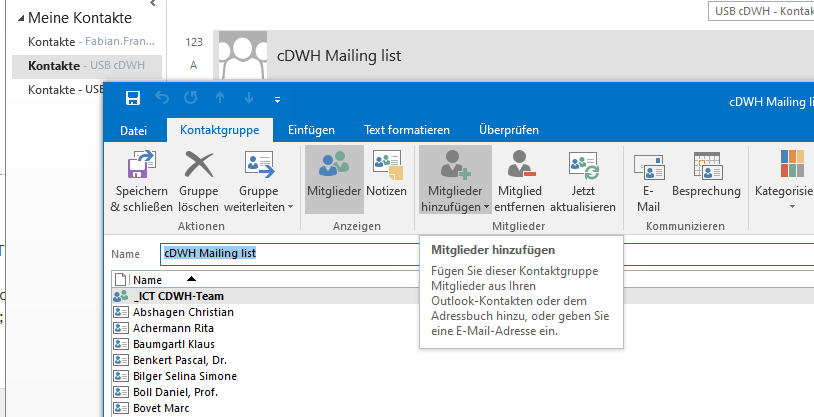

DataWarehouse : Add new user to HANA / CDWH schema
Created by Fabian Franzeck, last modified on Feb. 13, 2023
Approval process for new users
Members of the FAS department requiring data from DWH qualify by default
Persons outside of FAS need an E-Mail approval of Bram Stieltjes for DWH read access in order to proceed: These should fill in an USB "Antrag" on https://antrag.uhbs.ch/ for "Datenbank CDWH". If that persons supervisor approved the account, we receive a ticket in Jira "AutoFormularversand DWH".
In the Ticket: mention "@Bram Stieltjes " and ask for permission from Bram, which he should approve in the ticket in order to document his decision
Then save the Ticket as PDF move it in our Sharepoint 0219 in "\Dokumente\CDWH Zugriffsberechtigungen" ; new folder: Windows AD User_Full name.
Process of user creation
In general, the database admin is responsible for creation of users and password resets. Everything after that (distributing grants, etc.) is done by us
Assess if person qualifies for access (see above), document these necessary steps as described above
Username. Use the Windows AD user, in order to make the user identification easier.
System(s). Internal employees receive an DB user on DEV, KONS and PROD. For "external" DWH access, only a user on PROD is relevant.
Technical database user. If it is not a personal account but a technical user for a Interface, indicate this (default is personal). In general, these users have a "IF_" Prefix (e.g. IF_ANTIRESIST)
After receiving the confirmation, follow the instructions in Granting users and roles and grant the applicable access rights. People, which are not part of the CDWH-Team or the FAS department, only receive the cdwh_read role (deviations to be discussed with Bram Stieltjes).
Send an info E-Mail to the requestor, together with DBeaver User Documentation_v1.pdf which includes instructions on how the setup the connection in Dbeaver. There is draft E-mail within the cdwh@usb.ch mailbox called CDWH Zugang, that should be used as a template. Especially the disclaimer for external people is important. Note: the password change via DBeaver might not work. The E-Mail template only contains the workaround link for DWH PROD. The full set of links is:
Add Email of the new user to the "cDWH Mailing list" in Outlook: The list is stored in the email account cdwh@usb.ch
Differences between technical and personal users
Personal user
Are created with a mandatory requirement for a password change by the user within 7 days, there are regular forced password changes thereafter (password lifetime is set by the DBA, currently 90 days)
They should not be created as restricted users (the DBA did that in the past), as e.g. JDBC connections are not open for such users (needed for Dbeaver)
In case a personal user is requested, the DBA will run this:
-- force password change for personalized users
alter user $user_name$ FORCE PASSWORD CHANGE;
Technical user
These users are set with the default passwords for technical users (in Keepass).
This default password should not be sent out to any external person and must be changed!
Additionally, there ist no requirement for mandatory password changes for the future.
In case a technical user is requested, the DBA will run this:
-- disable enforced password changes in the future
alter user $user_name$ DISABLE PASSWORD LIFETIME;
{kind=link}